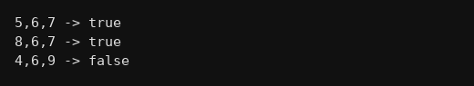

package functions;
public class Q034 {
static boolean consec(int a, int b, int c){
// order koi bhi ho sakta hai isliye sort kiya
int t;
if(a>b){ t=a; a=b; b=t; }
if(b>c){ t=b; b=c; c=t; }
if(a>b){ t=a; a=b; b=t; }
return (b-a==1 && c-b==1);
}
public static void main(String[] args) {
System.out.println("5,6,7 -> "+consec(5,6,7));
System.out.println("8,6,7 -> "+consec(8,6,7));
System.out.println("4,6,9 -> "+consec(4,6,9));
}
}